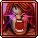

 Spells Rotation
Mastering spells is key to optimizing efficiency in any hunt, boss fight or any adventure in Tibia. Here, you'll find detailed information on spell usage based on your vocation, level, and combat type. Whether you play solo, in a team, or face challenging bosses, proper spell management will make the difference between a profitable hunt and unnecessary supply waste.
Executing precise spell rotations improves DPS and sustainability in prolonged hunts. Here, you will find optimal sequences to maximize damage, healing, and support while considering cooldown times and mana efficiency. Adapting rotations according to team composition and enemy type can significantly reduce pressure on healers and improve group stability.
Druid
As the primary healer in a team, the Druid’s priority is to keep allies alive without wasting resources. In party hunts, combining exura gran mas res with exura vita on tanks reduces the need for emergency heals. For solo hunts, balancing damage and regeneration by alternating terra wave or frigo wave with exura gran optimizes mana usage. In boss fights, the strategic use of exura gran mas res combined with utamo vita can make the difference in team survival.
Solo Hunt
Use Heavy Magic Missile and basic healing spells...
Optimize damage with Terra Wave and exura gran combinations...
Utilize advanced Terra Wave and support runes for higher efficiency...
Party Hunt
Heal allies with exura and exura gran efficiently...
Combine exura vita with supportive spells to reduce pressure on healers...
Employ utamo vita and aggressive healing in high-level hunts...
Boss Fights
Provide team support with defensive spells and timely heals...
Optimize healing rotations to handle boss enrage phases...
Maximize healing output while avoiding aggro in intense boss fights...
Knight
Managing incoming damage is crucial for a Knight. In party hunts, keeping utamo tempo active while alternating exura ico and exura ensures efficient damage absorption without overloading healers. In solo hunts, controlling creatures with exeta res combined with exura gran ico extends the hunt duration. Against bosses, timing utito tempo during peak damage phases is essential to avoid unexpected spikes.
Solo Hunt
Utilize defensive stances and damage absorption techniques...
Alternate between blocking and counterattacks for sustained fights...
Combine offensive and defensive rotations for high-level solo hunts...
Party Hunt
Coordinate defensive buffs with team support strategies...
Alternate between damage mitigation and counterattacks to maintain pressure...
Maximize survivability with synchronized rotations in team hunts...
Boss Fights
Time defensive spells during boss enrage phases...
Utilize damage absorption during critical moments...
Combine offensive maneuvers with tactical retreats against bosses...
Paladin
Mobility and distance management are essential for a Paladin. In party hunts, using utito tempo san combined with AoE attacks like diamond arrows maximizes damage without compromising safety. In solo hunts, an effective rotation of utamo tempo with exura gran allows maintaining offense while avoiding critical hits. In boss fights, holy spells can be decisive against energy-vulnerable enemies, and proper execution can optimize combat duration.
Solo Hunt
Maintain distance while dealing consistent damage...
Utilize ranged spells and healing cooldowns effectively...
Combine mobility buffs with precise AoE attacks for high-level solo hunts...
Party Hunt
Support teammates with consistent healing and buffs...
Alternate between offensive and defensive rotations in team hunts...
Optimize damage output while ensuring overall team survivability...
Boss Fights
Utilize holy spells at critical moments during boss phases...
Time your buffs and heals to mitigate sudden boss damage spikes...
Maximize survivability by combining offensive and defensive maneuvers during boss fights...
Sorcerer
As the main source of magical damage, a Sorcerer must balance explosiveness and sustainability. In party hunts, synchronizing utito tempo with energy wave or fire wave exponentially increases team DPS. In solo hunts, proper positioning and sustained pressure using exevo gran vis lux or exevo gran mas flam while utilizing exura for regeneration is key. Against bosses, managing mana with utamo vita and using ultimate explosion at the right moments can mean the difference between an efficient victory and excessive resource consumption.
Solo Hunt
Maintain pressure with explosive spells and rapid casts...
Optimize damage output by synchronizing spell rotations effectively...
Combine high-damage spells with efficient mana usage in solo hunts...
Party Hunt
Support team DPS by synchronizing spell casts and cooldowns...
Alternate between offensive spells and supportive cooldowns...
Maximize team output while maintaining efficient mana management...
Boss Fights
Utilize ultimate explosion and high-damage spells at critical boss moments...
Maintain consistent pressure while managing mana efficiently against bosses...
Combine offensive bursts with defensive spells to mitigate boss damage spikes...